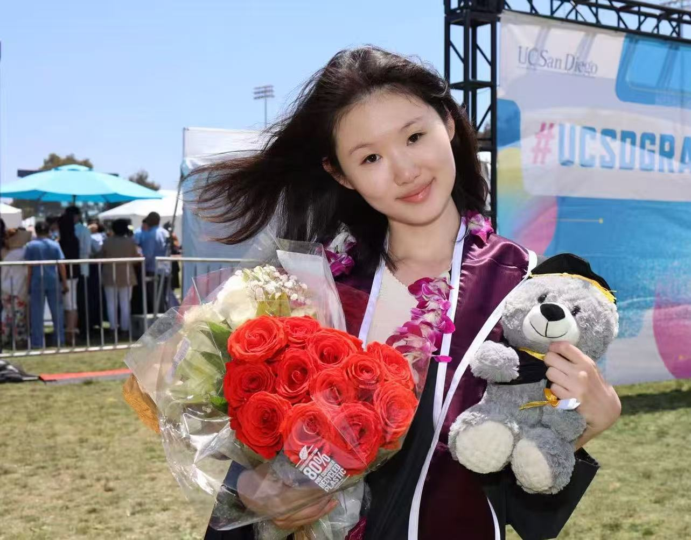

DS4CABS · 2026 Intern

About
Kening Li is pursuing advanced studies focused on neuroscience and data-science applications in healthcare. With research experience in MEG data analysis and interests in machine learning and neuroimaging, Kening applies computational methods to understanding brain function and supporting precision medicine.
Kening has contributed to interdisciplinary projects connecting experimental neuroscience with quantitative modeling, visualization, and statistical analysis, while also supporting collaborative scientific communities and mentorship-driven programs.
Program interests
- Data-science directions: Real-World Evidence Data Analytics and Biostatistics
- Drug-development stage: Digital Infrastructure, Automation & IT Systems
- Programming level: Advanced
- Tools and platforms: GitHub personal website development